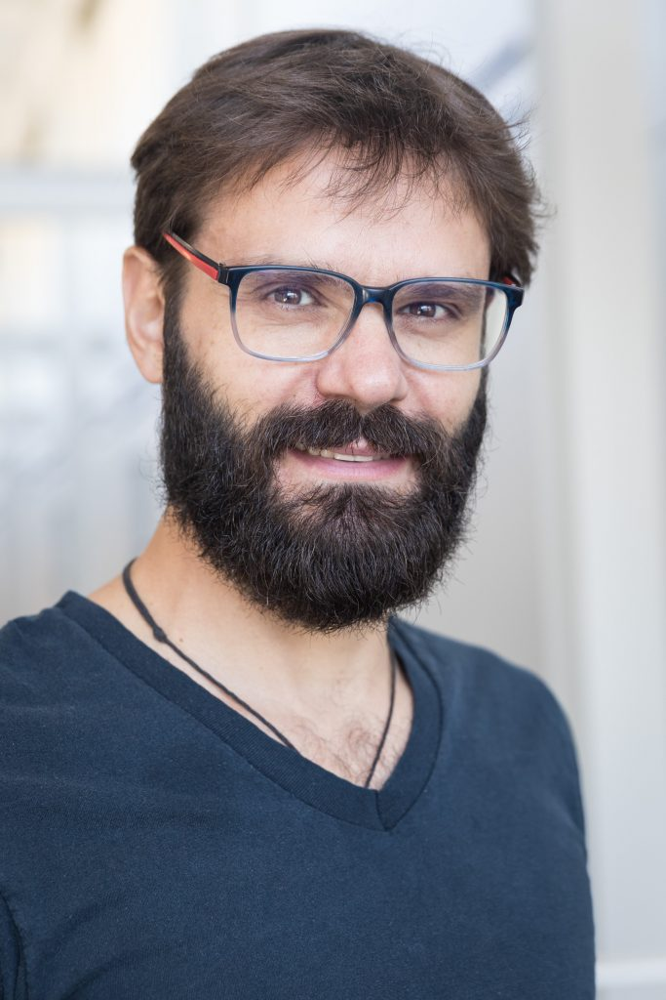

UCMerced Professor Dr. Angel S. Fernandez-Bou
delivers UC ANR Water
Webinar Series titled:
Glass Half Empty & Underrepresented,
underserved,
understudied
November 20, 2020
Post-doctoral scholar in the UC Merced Water Systems Management Lab, Dr. Angel Fernandez-Bou splits the new UC ANR Water webinar, "Glass Half Empty and Underrepresented, underserved, understudied," into two parts. The first half was led by CITRIS staff Leigh Bernacchi and Josh Viers with Jorge Valero-Fandino, Josué Medellín-Azuara and Fernandez-Bou. The " A glass half empty: Limited voices, limited groundwater security for California" paper was published this summer in the Science of The Total Environment, analyzes the role of newspaper media in the sustainable groundwater management act (SGMA).
The second part of the webinar focuses on disadvantaged communities in the central valley and how they are represented in scientific publications, newspaper news, and legislation bills.
He concludes the webinar with a guide that describes how disadvantaged communities can take action against climate change effects and how they can advocate for their own fundamental rights.
Watch the full webinar below.

Dr. Angel S. Fernandez-Bou works on multidisciplinary projects to preserve resources and habitat for society and nature. His focus is on finding solutions for biosystems challenges that require combinations of Engineering, Environmental, and Socioeconomic approaches. Dr. Fernandez-Bou holds a PhD in Environmental Systems (UC Merced), a MSc in Biosystems Eng. (UFF, Brazil), and a BEng in Agricultural Eng. (UPM, Spain). Bou currently works in the Water Systems Management Lab at UCMerced, led by Josué Medellín-Azuara.